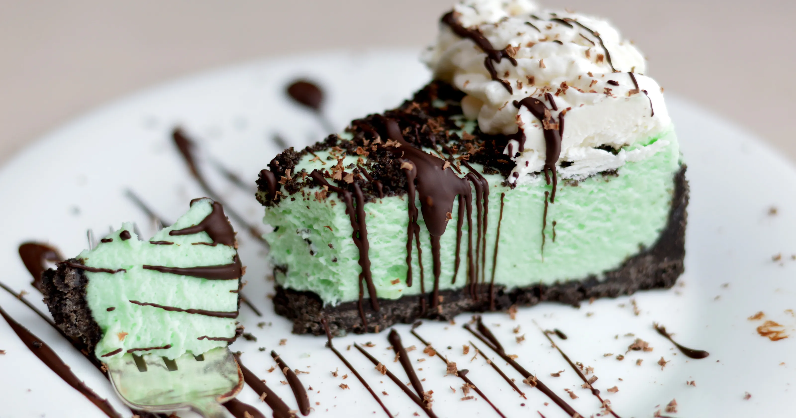

Grasshopper Pie

Description
Chocolate. Mint. Whats not to love?
The pale green cream gets its iconic color (and flavor) from creme de menthe and often creme de cacao.
A chocolatey cookie crust and chocolate shavings make this a pie to remember.
Ingredients
- 32 Oreo cookies
- 2 tsp. melted butter
- 14 oz. marshmallow creme
- 2/3 cup half-and-half
- 2 tbsp. creme de menthe
- 2 tbsp. creme de cacao
- 1 cup heavy cream
Steps
-
Throw the cookies and melted butter into a food processor and pulverize.
Set a small handful of crumbs aside to sprinkle over the finished pie.
Pour the rest into a pie pan and press into the bottom and up the sides of the pan. Set aside.
-
Heat the marshmallow and half-and-half in a saucepan over low heat, stirring constantly.
As soon as it's all melted and combined, place the saucepan in a bowl of ice to cool down quickly.
Once cool, add the creme de menthe and creme de cacao. Taste and add more creme de menthe if needed.
-
In a mixing bowl, beat the cream until stiff.
Pour the cold marshmallow mixture into the whipped cream and fold together gently.
Pour the filling into the chocolate crust. Sprinkle over the reserved cookie crumbs.
-
Freeze until very firm, about 2 hours.
Remove from the freezer 10 minutes or so before you want to slice and serve.